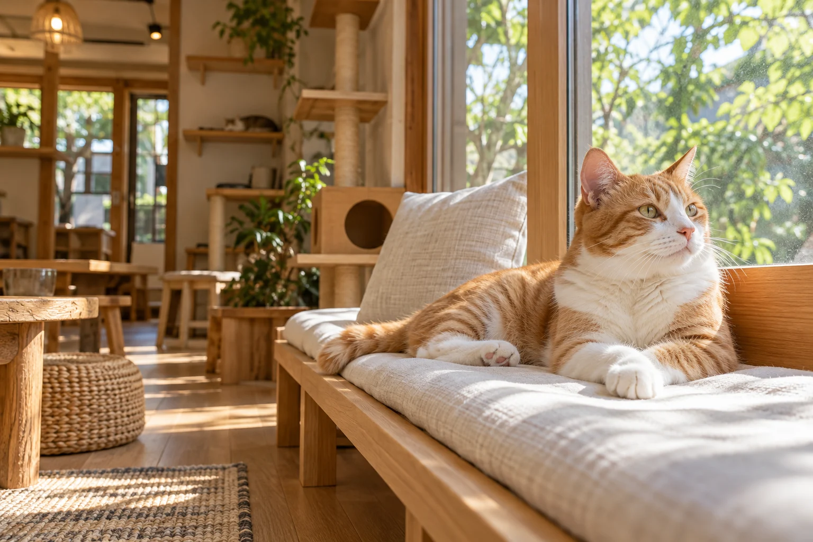

A LITTLE ENCOUNTER, A WARMER DAY.猫と、人と。
猫と、人と。
ひだまりのような
出会いを。
会いにくるだけでも、きっとできることがある。
猫たちと過ごす、ゆっくりとした時間。
ここは、新しいつながりが生まれる場所です。

猫にも、人にも。
やさしい居場所KOMOREBI NEKOBIYORI
やさしい居場所KOMOREBI NEKOBIYORI
猫のペースで、深呼吸。CONCEPT PHOTO / AI IMAGE
01 OUR STORY
ふらりと立ち寄る。それも、ひとつの応援。「かわいい」の先に、
「かわいい」の先に、
つながる未来がある。
猫と暮らしたことがなくても。
今は、お迎えすることが難しくても。
同じ空間でのんびり過ごすひとときが、
保護猫たちを知るきっかけになってほしい。
そんな想いを込めた、カフェの提案です。
MEET OUR CATS
猫たちをもっと知る ↗どんな子に、会えるかな。
※猫の名前・性格・年齢はデモ用の設定です。画像はAI生成です。